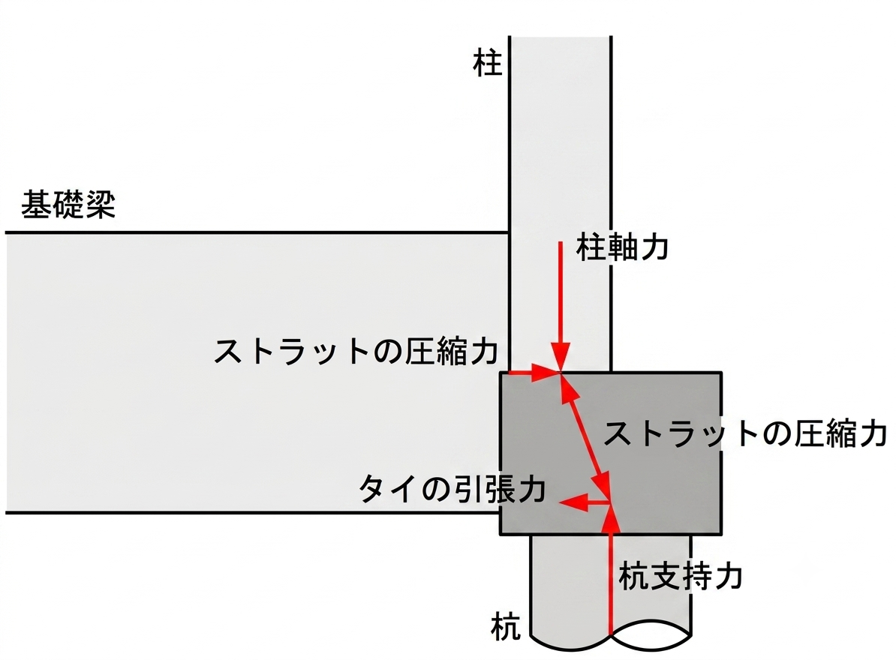

ストラット・タイモデルとは？偏心基礎フーチングの検討と無料Excel
ストラット・タイモデルは、コンクリートの中を流れる力を、シンプルな『骨組み（トラス）』に置きかえて考える方法です。特に杭が柱の真下からずれた「偏心基礎」のフーチング検討で役立ちます。この記事では、考え方・検討が必要になる場面・検討用Excel（無料ダウンロード）の使い方を、実務目線で解説します。
- ストラット・タイモデルは、コンクリート内の力をストラット（圧縮材）＝コンクリート／タイ（引張材）＝鉄筋のトラスに置き換える方法。
- 検討が必要になるのは、おもに基礎が偏心している場合（柱芯と杭芯がずれている）。
- 記事末で、ストラット・タイモデルの検討用Excelを無料配布しています。
ストラット・タイモデルとは？
ストラット・タイモデルは、コンクリートの中を流れる力を、シンプルな『骨組み（トラス）』に置きかえて考える方法です。2つの部材でモデル化します。
| 部品 | はたらき | 実際のもの |
|---|---|---|
| ストラット（圧縮材） | 押される力を伝える「つっぱり棒」 | コンクリート（ななめの圧縮） |
| タイ（引張材） | 引っぱられる力を受け持つ「ひも」 | 鉄筋（下端の主筋） |
フーチングでは、柱からの力がコンクリートのななめのつっぱり棒（ストラット）を通って杭へ流れます。すると杭の上では外向きに広がろうとする力が生まれるので、それを下端の鉄筋（タイ）が『ひも』のように引っぱって、ぐっと押さえこみます。

検討が必要な場合（偏心基礎）
柱の真下に杭がある基礎では、柱からの力が直接杭へ流れます。このような素直な力の流れなら、基本的に基礎フーチングに大きなせん断力は発生しません。
ところが、敷地境界や隣の建物との関係で、杭を柱の真下に置けないことがあります。柱の中心と杭の中心が横にずれている――これが「偏心している基礎」です。この場合、柱の力はまっすぐ下へ流れず、大きなせん断力が発生して、基礎フーチングの設計が非常に厳しくなります。
そこで役立つのがストラット・タイモデルです。「力がどこを通って杭へ届くか」という実際の流れに沿って骨組みをえがき、それに合わせて鉄筋を配置します。
- ストラット（つっぱり棒＝コンクリート）が、柱からかたよった杭へ向かうななめの力の道すじをそのまま表す。
- タイ（ひも＝鉄筋）が、その横ずれによって生じる引っぱりの力を受け持つ。
つまり、力がねじれて流れる偏心基礎でも、「どこを押して、どこを引っぱるか」を正直にモデル化できるのが強みです。
検討用Excelの使い方ガイド
1. このシートの目的
RC規準2018に倣い、柱から杭への軸力伝達において「ストラット・タイモデル」を用いて、ストラット（斜め圧縮材）に生じる圧縮応力度 σ が、コンクリートの許容圧縮応力度 fc 以下であること（σ ＜ fc）を確認するための計算シートです。検討軸力は1F柱軸力と1F床荷重の合計（支点反力−基礎自重）とします。
2. 使い方の基本（3ステップ）
- STEP1 水色（薄い青）の入力欄に数値を入力します。
- STEP2 「自動計算」の欄は数式が入っているため、触らずにそのままにします。
- STEP3 一番下の「判定」欄を確認します。OK なら安全、NG なら断面などを見直します。
3. 入力する項目（①〜⑩）
検討表の中で、次の項目に数値を入力します（G列。複数検討する場合はH列以降も同様）。
| No. | 入力項目 | セル | 内容・単位 |
|---|---|---|---|
| ① | 基礎符号・位置 | G26・G27 | 検討する基礎の名称と位置（例：F2A、SY1/SX1） |
| ② | NL（長期軸力） | G28 | [kN] 1F柱の長期軸力＋1F床荷重 |
| ③ | NE（地震時軸力） | G29 | [kN] 地震時に加わる軸力 |
| ④ | 基礎自重 | G30 | [kN] 基礎自身の重量 |
| ⑤ | 梁せい D | G31 | [mm] 基礎梁のせい |
| ⑥ | dt | G32 | [mm] 主筋重心までの距離 |
| ⑦ | 偏心距離 e | G34 | [mm] 柱杭芯距離（施工誤差100mmを考慮） |
| ⑧ | 柱幅 | G39 | [mm] |
| ⑨ | 柱せい | G40 | [mm] |
| ⑩ | コンクリート強度 Fc | G44 | [N/mm²] 設計基準強度 |
4. 自動で計算される項目
以下は数式により自動計算されます。入力は不要です。
| 自動計算項目 | 計算式 | 説明 |
|---|---|---|
| j | =(D−dt)×7/8 | ストラットのせい |
| sinθ | =j/√(j²+e²) | ストラットの傾斜角 |
| ストラットの圧縮軸力 C | 長期=(NL−自重)/sinθ／短期=(NL−自重+NE)/sinθ | ストラットに生じる圧縮力 |
| ストラットの断面積 As | =柱幅×柱せい×0.8 | 有効断面積 |
| ストラットの圧縮応力度 σ | =C×1000/(As×sinθ) | 応力度（これを判定に使用） |
| 長期/短期 許容応力度 | 長期=Fc/3／短期=Fc/3×2 | 許容できる応力度の上限 |
5. 判定の見方
- 判定（長期） σ（長期）＜ 長期許容応力度（Fc/3） であれば OK。
- 判定（短期） σ（短期）＜ 短期許容応力度（Fc/3×2） であれば OK。
NG の場合の対処：柱断面（柱幅・柱せい）を大きくする／偏心距離 e を小さくする／コンクリート強度 Fc を上げる、などにより応力度 σ を下げて再検討します。
6. 補足
- 別の基礎も検討したいときは、H列をコピーして右の列（I列・J列…）に貼り付け、値を変えます。
- 単位は各行のセル（[kN]・[mm]・[N/mm²]）に合わせて入力してください。
- 数式セルを誤って消した場合は、隣の列からコピーして戻せます。
検討用Excelの無料ダウンロード
ストラット・タイモデル 検討用Excel
上で解説した検討シート（footing_stm.xlsx）を無料でダウンロードできます。水色の入力欄に数値を入れるだけで、ストラットの圧縮応力度 σ と判定（σ＜fc）を確認できます。
※ Microsoft Excel（.xlsx）。計算結果は設計者ご自身の責任でご確認のうえご使用ください。
本記事とExcelは、ストラット・タイモデルの考え方を理解するための解説資料です。実際の設計では、採用する基準（RC規準ほか）や条件に応じた確認が必要です。Excelの計算結果は設計者ご自身の責任でご確認のうえご使用ください。
参考文献
- 鉄筋コンクリート構造計算規準・同解説（2024）（日本建築学会）
- 大阪府 構造計算適合性判定 指摘事例集（PDF）
まとめ
- ストラット・タイモデルは、コンクリート内の力をストラット（圧縮＝コンクリート）とタイ（引張＝鉄筋）のトラスで表す方法。
- 特に偏心基礎のフーチングで、力の流れに沿って鉄筋を配置できるのが強み。
- 検討用Excelで、ストラットの圧縮応力度σが許容値以下（σ＜fc）かを手早く確認できる。
基礎の基本は「基礎構造とは？直接基礎と杭基礎の違い」、計算の全体像は「許容応力度計算とは？」、鉄筋の配置は継手と定着もどうぞ。